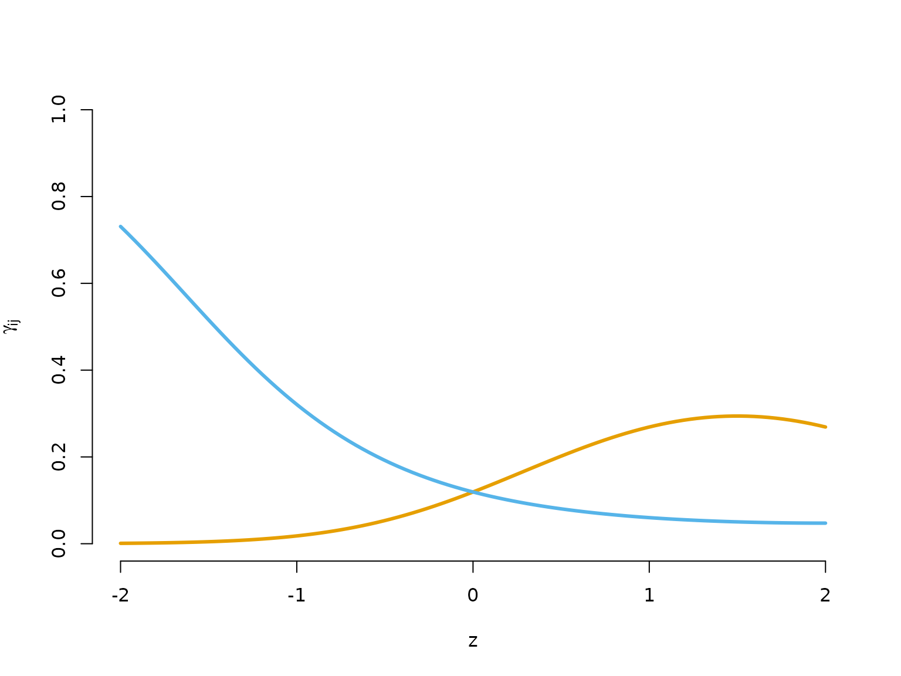
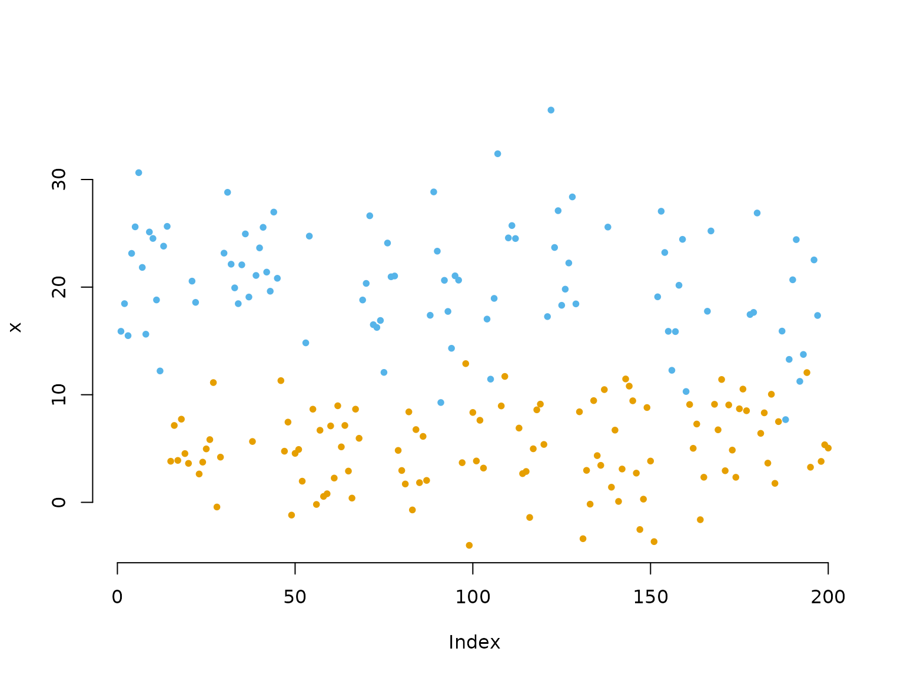
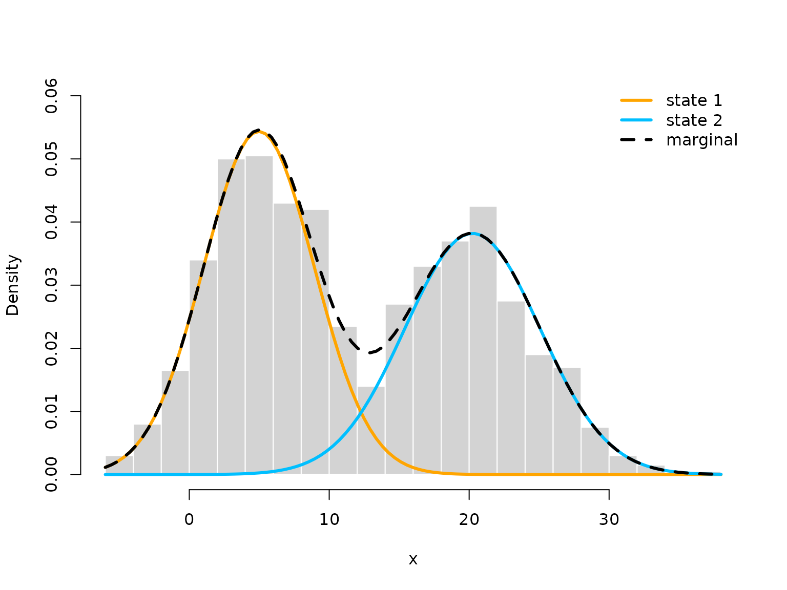
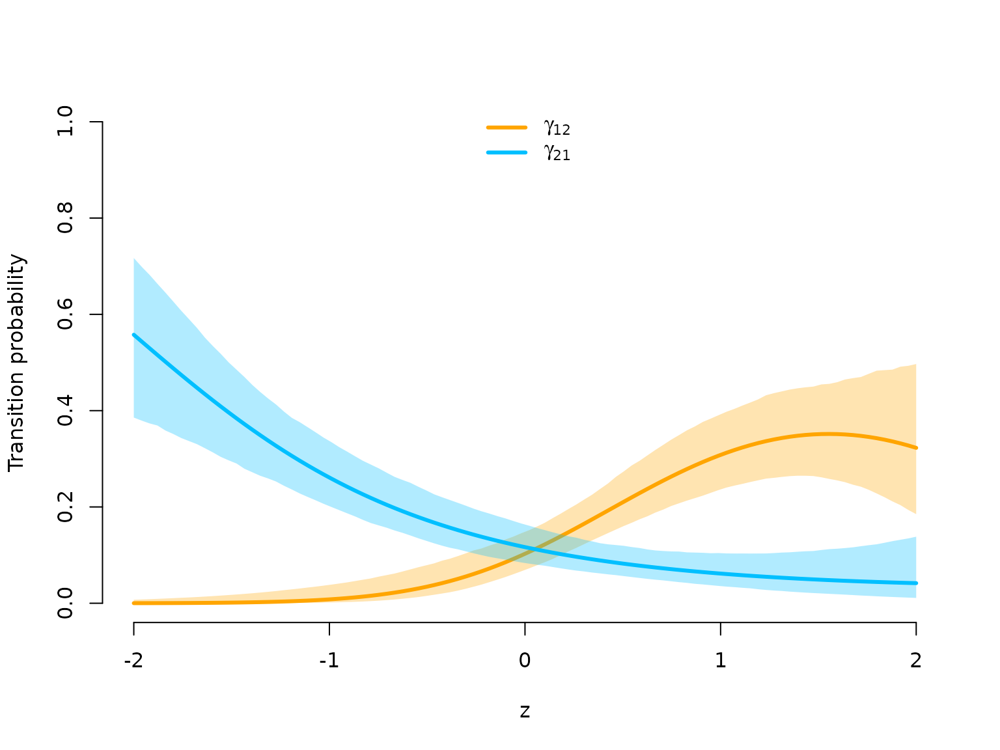
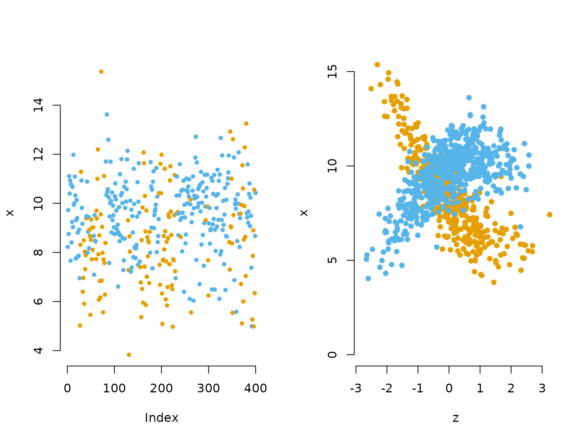
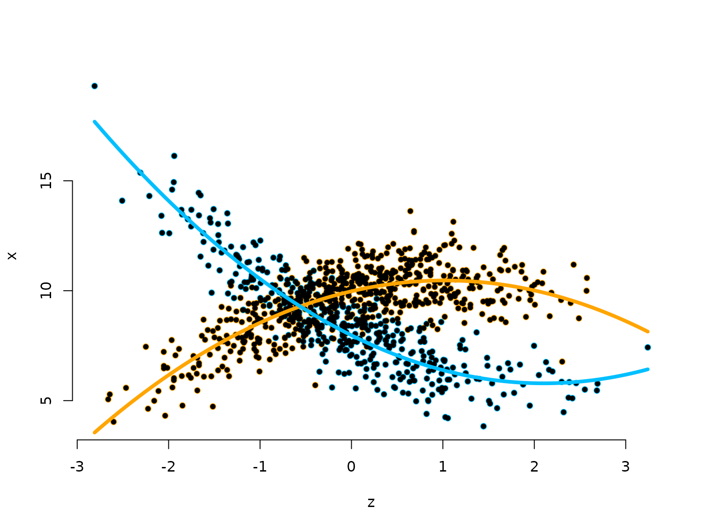

3 Extensions of the basic model structure
Jan-Ole Fischer
Extensions.RmdBefore diving into this vignette, we recommend reading the vignettes Introduction to LaMa and Automatic differentiation via RTMB
In this vignette, we discuss several extensions of the basic model structure, assuming you know how to fit basic models using automatic differentiation.
Multiple data streams
It is often the case that we observe more than one time series of
interest, e.g. in animal movement we often have both step lengths and
turning angles. If we assume contemporaneous conditional
independence, i.e. that the observations at each time t are independent of each other given the
underlying state S_t, modelling such
data is straightforward. Inside the likelihood this simply leads to us
having to calculate state-dependent densities for each data stream,
which are multiplied because of the independence assumption. Let’s see
this in the trex example:
library(LaMa)
#> Loading required package: RTMB
head(trex, 5)
#> tod step angle state
#> 1 9 0.3252437 NA 1
#> 2 10 0.2458265 2.234562 1
#> 3 11 0.2173252 -2.262418 1
#> 4 12 0.5114665 -2.958732 1
#> 5 13 0.3828494 1.811840 1We now include the variable angle in order to
incorporate additional information about the hidden state process. For
this variable, we assume a state-dependent von Mises
distribution, which is basically a normal distribution wrapped around
the unit circle. It is parameterised by a mean direction \mu \in [-\pi, \pi] and a concentration
parameter \kappa > 0. For movement
analyses, the state-dependent angle means are usually zero, hence we fix
them at zero. The likelihood function is easily modified to incorporate
the turning angle:
nll_multi = function(par) {
getAll(par, dat)
Gamma = tpm(eta)
delta = stationary(Gamma)
# Parameter transformations for strictly positive parameters
mu = exp(log_mu); REPORT(mu)
sigma = exp(log_sigma); REPORT(sigma)
# additional state-dependent turning angle concentration parameter
kappa = exp(log_kappa); REPORT(kappa)
# Calculating all state-dependent densities
allprobs = matrix(1, nrow = length(step), ncol = N)
ind = which(!is.na(step) & !is.na(angle)) # only for non-NA obs.
for(j in 1:N){
allprobs[ind,j] = dgamma2(step[ind], mu[j], sigma[j]) *
dvm(angle[ind], 0, kappa[j]) # simply multiplying the state-dep. densities
}
-forward(delta, Gamma, allprobs) # simple forward algorithm
}We now simply have to include initial values for the turning angle concentration parameters and fit the model:
N = 2 # number of hidden states
par = list(
eta = rep(-2, N*(N-1)), # (logit) initial t.p.m. parameters
log_mu = log(seq(0.3, 1, length=N)), # (log) initial means for step length
log_sigma = log(seq(0.2, 0.7, length=N)), # (log) initial sds for step length
log_kappa = log(seq(0.2, 0.4, length=N)) # (log) initial concentration for angle
)
dat = list(
step = trex$step, # hourly step lengths
angle = trex$angle, # hourly turning angles
N = N
)
# Fitting the model
obj_multi = MakeADFun(nll_multi, par, silent = TRUE)
opt_multi = nlminb(obj_multi$par, obj_multi$fn, obj_multi$gr)
mod_multi = report(obj_multi) # reporting from fitted modelWe can now plot the estimated state-dependent densities separately for each state:
# extracting estimated parameters
delta = mod_multi$delta
mu = mod_multi$mu
sigma = mod_multi$sigma
kappa = mod_multi$kappa
# defining color vector
color = LaMaColors(2)
oldpar = par(mfrow = c(1,2))
# step length
hist(trex$step, prob = TRUE, breaks = 40,
bor = "white", main = "", xlab = "step length")
for(j in 1:N) curve(delta[j] * dgamma2(x, mu[j], sigma[j]), lwd = 2, add = TRUE, col = color[j])
curve(delta[1]*dgamma2(x, mu[1], sigma[1]) + delta[2]*dgamma2(x, mu[2], sigma[2]),
lwd = 2, lty = 2, add = TRUE)
legend("top", lwd = 2, col = c(color, 1), lty = c(1,1,2),
legend = c("state 1", "state 2", "marginal"), bty = "n")
# turning angle
hist(trex$angle, prob = TRUE, breaks = seq(-pi, pi, length = 20),
bor = "white", main = "", xlab = "turning angle")
for(j in 1:2) curve(delta[j] * dvm(x, 0, kappa[j]), lwd = 2, add = TRUE, col = color[j])
curve(delta[1] * dvm(x, 0, kappa[1]) + delta[2] * dvm(x, 0, kappa[2]),
lwd = 2, lty = 2, add = TRUE)
par(oldpar)Covariate effects
In many empirical applications, either the state-process model or the state-dependent-process model depends on covariates. For example in animal movement, the transition probabilities between states might depend on environmental covariates such as temperature or vegetation cover. We will first look at covariate effects in the state process, and then at covariate effects in the state-dependent process, which is typically called Markov-switching regression.
Covariate effects in the state process
Covariate effects in the state process are usually modelled by
expressing the transition probability matrix \boldsymbol{\Gamma} as a function of
covariates. Let \boldsymbol{z}_t denote
a vector of covariates of length p+1
for time points t = 1, \dots, T, where
the first entry is always equal to 1 to
include an intercept. Moreover, let \boldsymbol{\beta}_{ij} be a vector of
regression coefficients, also of length p+1 for each off-diagonal element (i \neq j) of the t.p.m. First, consider
forming linear predictors
\eta_{ij}^{(t)} = \boldsymbol{\beta}_{ij}^\top \boldsymbol{z}_t =
\beta_{ij0} + \beta_{ij1} z_{t1} + \dots + \beta_{ijp} z_{tp},
for t = 1, \dots, T. In order
to link transition probabilities to these predictors, we need to ensure
that the former are in the interval (0,1), and that each row of the transition
matrix sums to one. This is achieved by using the inverse multinomial
logistic link function (softmax), which gives us
\gamma_{ij}^{(t)} = \Pr(S_t = j \mid S_{t-1} = i) =
\frac{\exp(\eta_{ij}^{(t)})}{\sum_{k=1}^N \exp(\eta_{ik}^{(t)})},
where \eta_{ii} is set to zero
for i = 1, \dots, N for identifiability
and N is the number of hidden states.
We can do this computation with LaMa by providing a T \times p covariate design matrix
Z and an N(N-1) \times
(p+1) coefficient matrix beta to tpm().
The function then computes the associated transition matrix for each
time point, which is returned as an array of dimension N \times N \times T. Note that
tpm() handles the intercept automatically: if
Z does not already contain a leading column of ones, it is
added internally, so Z only needs to contain the actual
covariates.
Simulation example
Let’s start by simulating data from the above specified model,
assuming N = 2 states and Gaussian
state-dependent distributions. The covariate effects for the state
process are fully specified by a parameter matrix beta of
dimension c(N*(N-1), p+1). By default the function
tpm() will fill the off-diagonal elements of each
transition matrix by column, which can be changed by setting
byrow = TRUE. The latter is useful, as popular HMM packages
like moveHMM or momentuHMM return the
parameter matrix such that the t.p.m. needs to be filled by row.
# parameters
mu = c(5, 20) # state-dependent means
sigma = c(4, 5) # state-dependent standard deviations
# state process regression parameters
beta = matrix(c(-2, -2, # intercepts
-1, 1.5, # linear effects
0.25, -0.5), # quadratic effects
nrow = 2)
n = 1000 # number of observations
set.seed(123)
z = rnorm(n)
Z = cbind(z, z^2) # quadratic effect of z
Gamma = tpm(beta, Z) # of dimension c(2, 2, n)
delta = c(0.5, 0.5) # non-stationary initial distribution
# Let's plot the covariate effects that we simulated:
z_p = seq(-2,2, length = 100) # prediction grid for covariate plot
Z_p = cbind(z_p, z_p^2) # prediction matrix
Gamma_p = tpm(beta, Z_p)
plot(z_p, Gamma_p[1,2,], type = "l", lwd = 3, bty = "n", ylim = c(0,1),
xlab = "z", ylab = expression(gamma[ij]), col = color[1])
lines(z_p, Gamma_p[2,1,], lwd = 3, col = color[2])
Let’s now simulate synthetic data from the above specified model.
s = rep(NA, n)
s[1] = sample(1:2, 1, prob = delta) # sampling first state from initial distribution
for(t in 2:n){
# sampling next state conditional on previous one with tpm at that time point
s[t] = sample(1:2, 1, prob = Gamma[s[t-1],,t])
}
# sampling observations conditional on the states
x = rnorm(n, mu[s], sigma[s])
plot(x[1:200], bty = "n", pch = 20, ylab = "x",
col = c(color[1], color[2])[s[1:200]])
Fitting an HMM to the data
In order to fit the model to the simulated data, we specify the likelihood function, pretending to know the polynomial degree of the effect of z on the transition probabilities, which in reality we would have to determine based on model selection criteria.
Note that because the Markov chain is now inhomogeneous — its
transition probabilities change over time — it does not have a single
stationary distribution. We therefore cannot use
stationary() to fix the initial distribution and instead
have to estimate it. We do this by adding a single unconstrained
parameter logit_delta to par and constructing
the initial distribution from it inside the likelihood.
nll_cov = function(par) {
getAll(par, dat)
Gamma = tpm(beta, Z)
# unconstrained parameterisation of a 2-state initial distribution
delta = c(1, exp(logit_delta)) # make > 0
delta = delta / sum(delta) # distribution -> needs to sum to 1
sigma = exp(log_sigma); REPORT(sigma); REPORT(mu)
# calculate all state-dependent probabilities
allprobs = matrix(1, length(x), N)
for(j in 1:N) allprobs[,j] = dnorm(x, mu[j], sigma[j])
# forward algorithm
-forward(delta, Gamma, allprobs)
}Using automatic differentiation with RTMB, we can – very
neatly – specify beta as a parameter matrix in the desired
shape. Model fitting is also extremely quick:
N = 2
par = list(
beta = cbind(rep(-2, N*(N-1)),
matrix(0, N*(N-1), 2)), # initialising with slopes = 0
logit_delta = rep(0, N-1), # starting value for initial distribution
mu = seq(4, 14, length = N), # initial state-dependent means
log_sigma = log(seq(3,5, length = N)) # initial state-dependent sds
)
dat = list(
x = x,
Z = Z,
N = N
)
obj_cov = MakeADFun(nll_cov, par, silent = TRUE)
system.time(
opt <- nlminb(obj_cov$par, obj_cov$fn, obj_cov$gr)
)
#> user system elapsed
#> 0.037 0.000 0.036
mod_cov <- report(obj_cov) # reporting from fitted modelLet’s plot the fitted model, starting with the estimated state-dependent densities. We can obtain approximate global state probabilities from decoded states.
mod_cov$states = viterbi(mod = mod_cov)
delta = prop.table(table(mod_cov$states))
# get state-dependent parameters
mu = mod_cov$mu
sigma = mod_cov$sigma
hist(x, prob = TRUE, bor = "white", breaks = 20, main = "", ylim = c(0, 0.06))
curve(delta[1] * dnorm(x, mu[1], sigma[1]), add = TRUE, lwd = 3, col = color[1])
curve(delta[2] * dnorm(x, mu[2], sigma[2]), add = TRUE, lwd = 3, col = color[2])
curve(delta[1] * dnorm(x, mu[1], sigma[1]) +
delta[2] * dnorm(x, mu[2], sigma[2]),
add = TRUE, lwd = 3, lty = "dashed")
legend("topright", col = c(color[1], color[2], "black"), lwd = 3, bty = "n",
lty = c(1,1,2), legend = c("state 1", "state 2", "marginal"))
In order to plot the estimated effect with 95 percent confidence
intervals, we can use MCreport() to get samples of
beta from the approximate normal distribution of the MLE
and then use tpm() to get the associated transition
probabilities on our prediction grid.
samples = MCreport(obj_cov)
#> Evaluating Hessian...
# compute samples
g12 = sapply(samples$beta, function(b) tpm(b, Z_p)[1,2,]) # gamma_12
g21 = sapply(samples$beta, function(b) tpm(b, Z_p)[2,1,]) # gamma_21
# compute quantiles
g12.q = apply(g12, 1, quantile, probs = c(0.025, 0.975))
g21.q = apply(g21, 1, quantile, probs = c(0.025, 0.975))
# at MLE
Gamma_p = tpm(mod_cov$beta, Z_p) # predicted tpm
# plot fitted state-process regression
plot(NA, bty = "n", ylim = c(0,1), xlim = c(-2,2),
xlab = "z", ylab = "Transition probability")
# confidence interval
polygon(c(z_p, rev(z_p)), c(g12.q[1,], rev(g12.q[2,])), col = adjustcolor(color[1], 0.3), border = NA)
# MLE
lines(z_p, Gamma_p[1,2,], lwd = 3, col = color[1])
# confidence interval
polygon(c(z_p, rev(z_p)), c(g21.q[1,], rev(g21.q[2,])), col = adjustcolor(color[2], 0.3), border = NA)
# MLE
lines(z_p, Gamma_p[2,1,], lwd = 3, col = color[2])
legend("top", col = color, legend = c(expression(gamma[12]), expression(gamma[21])), lwd = 3, bty = "n")
Covariate effects in the state-dependent process
We now look at a setting where covariates influence the mean of the state-dependent distribution, while the state switching is controlled by a homogeneous Markov chain. This is often called Markov-switching regression. Assuming the observation process to be conditionally normally distributed, this means
X_t \mid S_t = j \sim N(\beta_j^\top z_t, \: \sigma_j^2), \quad j = 1, \dots, N.
Simulation example
First we specify parameters for the simulation. The important change
here is that beta now contains the regression coefficients
for the state-dependent regressions.
sigma = c(1, 1) # state-dependent standard deviations (homoscedasticity)
# parameter matrix
# each row contains parameter vector for the corresponding state
beta = matrix(c(8, 10, # intercepts
-2, 1, 0.5, -0.5), # slopes
nrow = 2)
n = 1000 # number of observations
set.seed(123)
z = rnorm(n)
Z = cbind(z, z^2) # quadratic effect of z
Gamma = matrix(c(0.9, 0.1, 0.05, 0.95),
nrow = 2, byrow = TRUE) # homogeneous t.p.m.
delta = stationary(Gamma) # stationary Markov chainSimulation
In the simulation code, the state-dependent mean now is not fixed
anymore, but changes according to the covariate values in
Z.
s = x = rep(NA, n)
s[1] = sample(1:2, 1, prob = delta)
x[1] = rnorm(1, beta[s[1],]%*%c(1, Z[1,]), # state-dependent regression
sigma[s[1]])
for(t in 2:n){
s[t] = sample(1:2, 1, prob = Gamma[s[t-1],])
x[t] = rnorm(1, beta[s[t],] %*% c(1, Z[t,]), # state-dependent regression
sigma[s[t]])
}
oldpar = par(mfrow = c(1,2))
plot(x[1:400], bty = "n", pch = 20, ylab = "x",
col = c(color[1], color[2])[s[1:400]])
plot(z[which(s==1)], x[which(s==1)], pch = 16, col = color[1], bty = "n",
ylim = c(0,15), xlab = "z", ylab = "x")
points(z[which(s==2)], x[which(s==2)], pch = 16, col = color[2])
par(oldpar)Writing the negative log-likelihood function
In the likelihood function, we also add the state-dependent
regression in the loop calculating the state-dependent probabilities.
The code cbind(1,Z) %*% t(beta) computes all linear
predictor for the states 1 and 2 at once. It thus returns a matrix of
dimension T \times 2.
nll_msr = function(par) {
getAll(par, dat)
Gamma = tpm(eta)
delta = stationary(Gamma)
sigma = exp(log_sigma); REPORT(sigma)
# calculate all state-dependent probabilities
allprobs = matrix(1, length(x), 2)
# state-dependent regression
REPORT(beta)
Mu = cbind(1,Z) %*% t(beta) # Z %*% beta[j,] all at once
for(j in 1:2) allprobs[,j] = dnorm(x, Mu[,j], sigma[j])
# forward algorithm
-forward(delta, Gamma, allprobs)
}Fitting a Markov-switching regression model
par = list(
eta = c(-3, -2), # starting values state process
beta = cbind(c(10, 10), matrix(0, 2, 2)), # starting values for regression
log_sigma = c(log(1), log(1)) # starting values for sigma
)
dat = list(
x = x,
Z = Z
)
obj_msr = MakeADFun(nll_msr, par, silent = TRUE)
opt_msr = nlminb(obj_msr$par, obj_msr$fn, obj_msr$gr)
mod_msr = report(obj_msr)Visualising results
To visualise the results, we transform the parameters to working parameters and add the two estimated state-specific regressions to the scatter plot.
Gamma_hat_reg = mod_msr$Gamma
delta_hat_reg = mod_msr$delta
sigma_hat_reg = mod_msr$sigma
beta_hat_reg = mod_msr$beta
states = viterbi(mod = mod_msr)
# we have some label switching
plot(z, x, pch = 16, bty = "n", xlab = "z", ylab = "x", col = color[states])
points(z, x, pch = 20)
curve(beta_hat_reg[1,1] + beta_hat_reg[1,2]*x + beta_hat_reg[1,3]*x^2,
add = TRUE, lwd = 4, col = color[1])
curve(beta_hat_reg[2,1] + beta_hat_reg[2,2]*x + beta_hat_reg[2,3]*x^2,
add = TRUE, lwd = 4, col = color[2])
A special covariate: Seasonality
A notable special case for covariate effects is called seasonality. For example, the transition probabilities might vary with the time of day or the day of year. Functions of such covariates need to fulfil the boundary condition that the values of the beginning and end of a cycle need to match. In practice, this is usually done by using a trigonometric basis expansion which, in its simplest form, for a cycle length of e.g. 24, looks like:
\eta^{(t)}_{ij} = \beta_0^{(ij)} + \beta_{1}^{(ij)} \sin
\bigl(\frac{2\pi \, \text{time}_t}{24} \bigr) + \beta_{2}^{(ij)}
\cos\bigl(\frac{2 \pi \, \text{time}_t}{24}\bigr).
While this is a non-linear function in the variable
time, it is still linear in the model parameters. Hence, the
sine and cosine expressions can also be precomputed and stored in a
design matrix. In LaMa, this can be done using the
cosinor() function, e.g.
Z_tod = cosinor(1:24, period = 24)
head(Z_tod)
#> sin(2*pi*1:24/24) cos(2*pi*1:24/24)
#> [1,] 0.2588190 9.659258e-01
#> [2,] 0.5000000 8.660254e-01
#> [3,] 0.7071068 7.071068e-01
#> [4,] 0.8660254 5.000000e-01
#> [5,] 0.9659258 2.588190e-01
#> [6,] 1.0000000 6.123234e-17If we now express the transition matrix as a function of the linear
predictors \eta^{(t)}_{ij} above, the
Markov chain has a special property. Its transition probabilities are
periodically varying, and hence for all t
\Gamma^{(t+L)} = \Gamma^{(t)},
where L is the cycle length. As
shown by Koslik et al. (2025), such chains exhibit a
special periodic behaviour. In particular, they converge to a unique
periodically stationary state distribution. This distribution, giving
the probability of the process being at any of the states at a
particular time point in the cycle, can be computed using the function
stationary_p(). It expects a tpm array with third dimension
equal to the cycle length and returns a matrix, where each row gives the
distribution for that time point in the cycle.
Let’s try out everything we learned using the trex data
set as an example. It has a time of day (tod)
covariate:
head(trex, 6)
#> tod step angle state
#> 1 9 0.3252437 NA 1
#> 2 10 0.2458265 2.234562 1
#> 3 11 0.2173252 -2.262418 1
#> 4 12 0.5114665 -2.958732 1
#> 5 13 0.3828494 1.811840 1
#> 6 14 0.4220099 1.834668 1As usual, we set initial parameter values. In the dat list, we include the trigonometric design matrix as well as the integer time of day variable.
par = list(
log_mu = log(c(0.3, 1)), # initial means for step length
log_sigma = log(c(0.2, 0.7)), # initial sds for step length
beta = cbind(c(-2,-2), matrix(0, 2, 2)) # initial t.p.m. parameters
)
dat = list(
step = trex$step, # hourly step lengths
N = 2,
Z_tod = Z_tod,
tod = trex$tod
)In the likelihood function, we only compute the unique 24 transition
matrices and then, based on these, the corresponding stationary
distribution(s) using stationary_p(). When running the
forward algorithm in the last line, we then have to i) pick the
stationary distribution corresponding to the first time of day value
(Delta[tod[1],]) and ii) build an array of tpms for the
entire time series by indexing the 24 matrices using
(Gamma[,,tod]).
nll_seas = function(par) {
getAll(par, dat)
Gamma = tpm(beta, Z_tod)
Delta = stationary_p(Gamma) # periodically stationary distribution
ADREPORT(Delta)
# Parameter transformations for strictly positive parameters
mu = exp(log_mu); REPORT(mu)
sigma = exp(log_sigma); REPORT(sigma)
# Calculating all state-dependent densities
allprobs = matrix(1, nrow = length(step), ncol = N)
ind = which(!is.na(step)) # only for non-NA obs.
for(j in 1:N){
allprobs[ind,j] = dgamma2(step[ind], mu[j], sigma[j])
}
-forward(Delta[tod[1],], Gamma[,,tod], allprobs)
}Let’s fit the model:
obj_seas = MakeADFun(nll_seas, par, silent = TRUE)
opt_seas = nlminb(obj_seas$par, obj_seas$fn, obj_seas$gr)
sdr_seas = sdreport(obj_seas)
mod_seas = report(obj_seas)And look at the estimated periodically stationary distribution:
Delta = as.list(sdr_seas, "Est", report = TRUE)$Delta
Delta_sd = as.list(sdr_seas, "Std", report = TRUE)$Delta
# Only plot for state 2 (state 1 is just 1-delta_2)
id = c(24, 1:24) # copy value at 24 to 0 for nicer plot
plot(0:24, Delta[id,2], type = "b", col = "deepskyblue", bty = "n", lwd = 2,
pch = 16, ylim = c(0,1), xlim = c(0, 24),
xlab = "time of day", ylab = "Pr(state 2)", xaxt = "n")
axis(1, at = c(0, 6, 12, 18, 24), label = c(0, 6, 12, 18, 24))
polygon(c(0:24, 24:0),
c(Delta[id,2] + 2*Delta_sd[id,2], rev(Delta[id,2] - 2*Delta_sd[id,2])),
col = adjustcolor("deepskyblue", 0.2), border = FALSE)
Continue reading with Longitudinal data or Penalised splines.